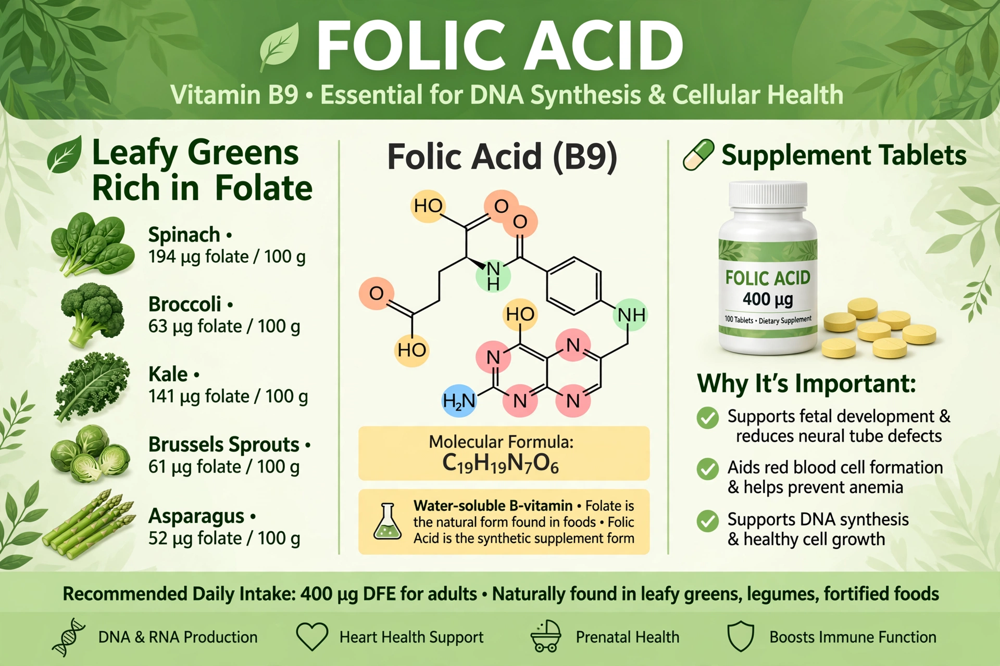

Folic acid, also known as folate in its natural food forms and as vitamin B9, is a water-soluble B vitamin essential for DNA synthesis, cell division and the formation of red blood cells. Folic acid is the synthetic form used in supplements and fortified foods.

| Folic acid | |
|---|---|
| Vitamin | B9 |
| Sources | Leafy greens, legumes, fortified grains |
| Deficiency | Megaloblastic anaemia, neural tube defects |
| RDA (adults) | 400 µg DFE |
Folates carry one-carbon units in metabolism, enabling synthesis of nucleotides, methylation reactions and amino-acid interconversion, in close interplay with vitamin B12. Deficiency impairs rapidly dividing cells first.
Inadequate folate in early pregnancy greatly increases the risk of neural tube defects such as spina bifida and anencephaly; women of childbearing age are advised 400–800 µg folic acid daily before conception and in the first trimester. Many countries fortify flour, cutting defect rates. Deficiency also causes megaloblastic anaemia; excess folic acid can mask B12 deficiency anaemia while neurological damage progresses.
Lucy Wills identified the factor in the 1930s from work on anaemia in pregnancy in India; folate was isolated from spinach (Latin folium, leaf) in 1941 and synthesised in 1945.